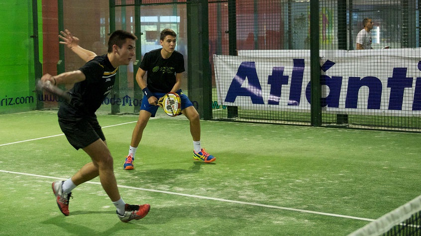
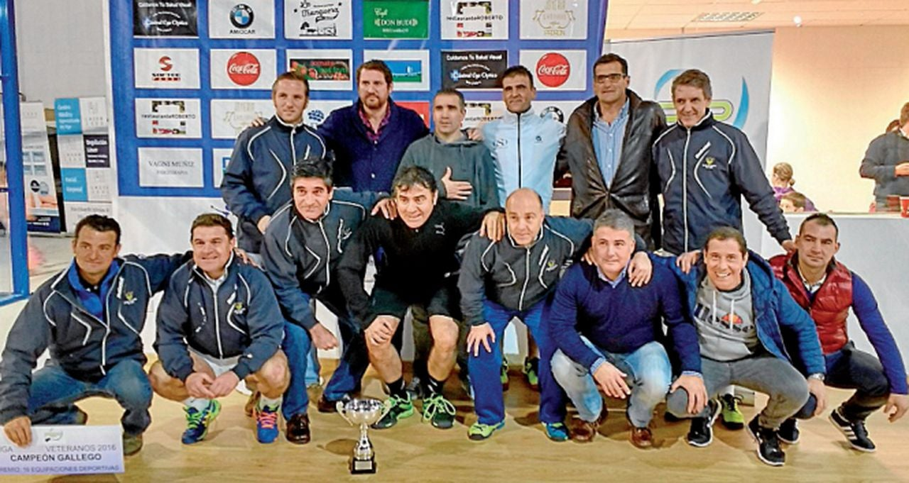
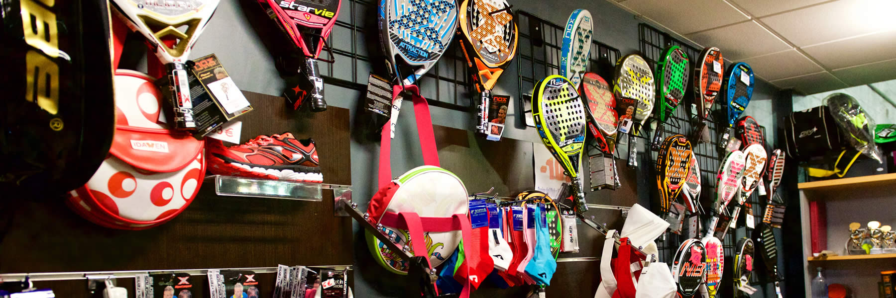

Hay más de 10 monitores e instructores personales en todas las categorias. Las clases para adultos están disponibles de lunes a sábado en diferentes turnos del día, las clases para niños de 7 a 14 años son de miércoles a sábado en el turno de la tarde.
Realizamos y participamos en muchos torenos cada año. Organizamos cada 4 meses torneos con los socios del club; cada torneo posee diferentes categorías de acuerdo a las diferentes edades. Anualmente nos invitan a torneos nacionales para representar la provincia de Pontevedra, donde elegimos a nuestros jugadores con los mejores resultados de nuestros propios torneos, con el objetivo de ganar las competiciones nacionales.

Socios / No Socios / Club Deportivo
Desde apertura hasta 17.00 / 2.5 / 3.5 / 3
De 17.00 hasta 18.30 / 3 / 4.5 / 4
Desde 18.30 hasta 21.30 / 4.5/ 7 / 6.5
A partir de 21.30 / 4 / 6 / 5.5
Fines de semana y festivos / 3.5 / 5 / 4.5
90 minutos, luz incluida.
Ventajas Socios: Reserva de pista con 10 días de antelación, posibilidad de reserva con 25 días de antelación en hora, descuento en escuela 10%.
Taquilla 60 euros año, y socios gratis.
24/11/2019: En enero de 2020 el club tendrá dos nuevas pitas cubiertas.
10/11/2019: Este invierno inicia nuestro último torneo del año.
05/10/2019: Nuevas precios en la matriculación.
Disponemos del mejor material deportivo para los entrenamientos, encuentros y torneos. La tienda está disponible para todo el público, los socios recibirán ofertas y descuentos constantemente.
Club Pádel Vigo es un club deportivo en el que pretendemos fomentar la práctica de este deporte en Vigo y su comarca. Contamos con unas instalaciones de 3000 m2.
Correo: info@padelupm.com. Dirección: Carretera da Ponte Segade 29 - Sardoma - 36.214 Vigo